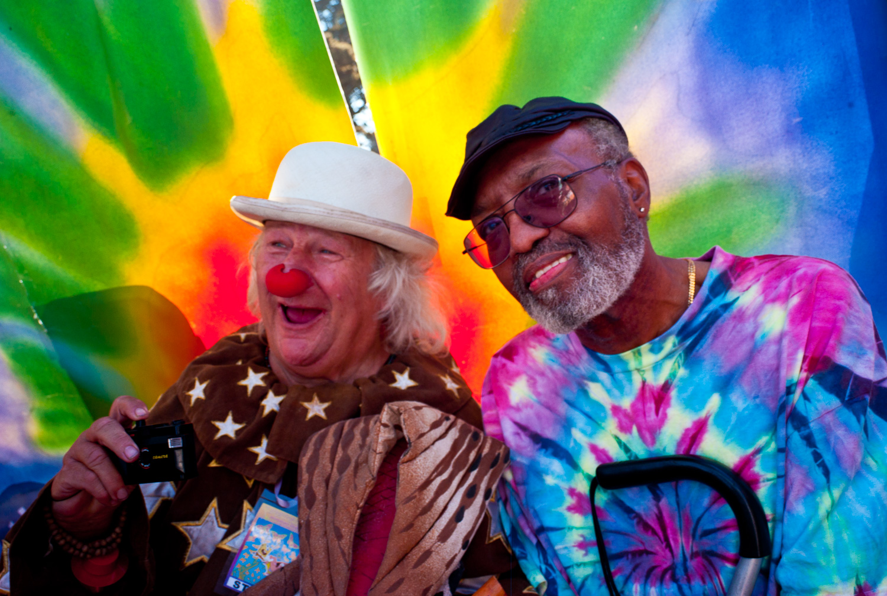

Photographs. Stories. Kindred spirits.
The music.
The people.
The spirit lives on.
Photographs and firsthand stories from Chuck Jones.
Find an image that moves you. Stay for the connection.
Wavy Gravy & Merl Saunders · Golden Gate Park, 2007
From the archive
Find your place in the story.
On stage, backstage, and somewhere in the crowd.
Come see what it felt like to be there.


Frame shown for illustration.
Bring a little of the spirit home
Some photographs
belong on your wall.
A moment you can live with. A story you can pass on. Collect a limited edition photograph, signed and numbered by Chuck Jones.
Editions of 25 · Artist pigments on Crane Museo Max
Open a gallery, choose a photograph, then select “Buy This Print” to see available sizes and checkout.
A note from Chuck
Just an old hippie.
With a Leica.
And a lot of heart.
Chuck Jones
“I'm just the old hippie who was there with a Leica in my hands and a great experience in my sights.”
These photographs are about being there: the music, the faces, the little moments between the big ones. In September 2007, I brought my cameras to Golden Gate Park and Sausalito. These galleries are what I brought home.
Maybe you were there, too. Maybe a photograph takes you somewhere else entirely. Either way, your story belongs in the conversation.
Read the story behind the Summer of Love →
“The story I hope to share is the story of what it felt like to be me, in my shoes, that day. What the experience and the natural ‘high’ of just being there with the tribe felt like still 40 years later.”
— Chuck Jones, artist’s statement
Step into the gallery ↗TheTribe™ · Taking shape
Good people.
Open hearts.
Stories worth sharing.
A place for people who feel something when they look at a photograph. Bring a memory, a picture, a question—or simply yourself.
Keep me in the loop →Come as you are. ☮
A photograph starts it.
A face, a place, a feeling. The kind of image that makes you say, “That reminds me…”
Your story carries it.
Memories and photographs from everyone. Room to talk, room to listen, room to just be.
Connection happens naturally.
Casual conversations when you feel like dropping by. No attendance sheet. No pedestal.
The community space is being planned. Public photo sharing, conversations, and audio hangouts aren’t open yet. For now, explore the archive and sign up for news.
A little something from Chuck
Keep the good stories coming.
New galleries. New prints. The occasional story.
A free invitation to stay connected.
A detour for the curious
Let curiosity take the wheel.
The Oracle is an experiment in matching photographs and quotes to your birth chart. Try it, see what resonates, and judge for yourself.